原文连接:https://www.cnblogs.com/Infi-chu/p/11430107.html
Infi-chu:
http://www.cnblogs.com/Infi-chu/
一、线性回归应用场景
- 房价预测
- 销售额度预测
- 贷款预测
二、线性回归基本概念
1.定义
线性回归(Linear regression)是利用回归方程(函数)对一个或多个自变量(特征值)和因变量(目标值)之间关系进行建模的一种分析方式。
2.特点
只有一个自变量的情况称为单变量回归，多于一个自变量情况的叫做多元回归。
3.公式
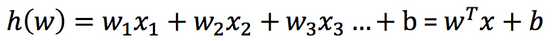
【注】
其中w，x可以理解为矩阵
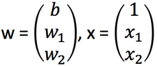
eg.
原方程：
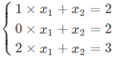
转化为矩阵：
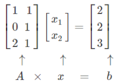
从列的角度看：
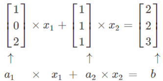
4.应用举例
- 期末成绩：0.7×考试成绩+0.3×平时成绩
- 房子价格 = 0.02×中心区域的距离 + 0.04×城市一氧化氮浓度 + (-0.12×自住房平均房价) + 0.254×城镇犯罪率
特征值与目标之间建立了一个关系，这个关系可以理解为线性模型。
5.线性模型：
- 线性关系
- 单变量线性关系
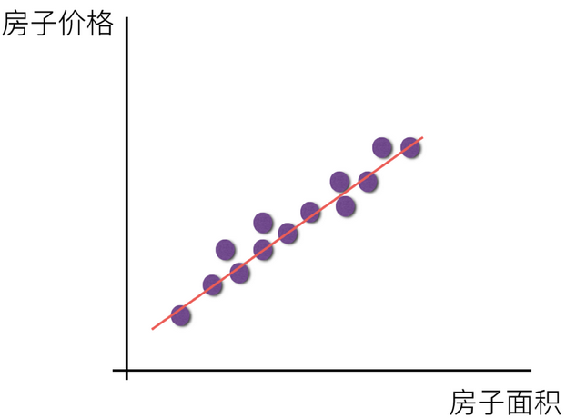 - 多变量线性关系
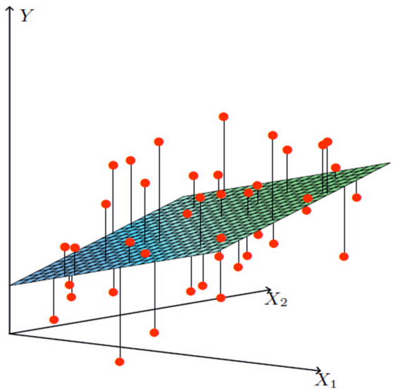
【注】
单特征与目标值的关系呈直线关系，或者两个特征与目标值呈现平面的关系。
- 单变量线性关系
- 非线性关系
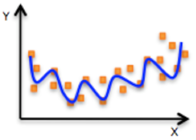
【注】
如果是非线性关系，那么回归方程可以理解为：w1x1^1+w2x2^2+w3x3^2
三、线性回归API
1.API
sklearn.linear_model.LinearRegression()
- LinearRegression.coef_：回归系数
2.例子
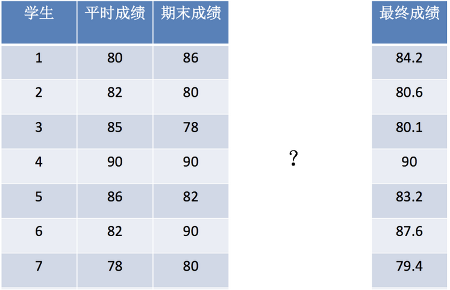
步骤：
- 获取数据集
- 数据基本处理
- 特征工程
- 机器学习
- 模型评估
编写程序：
# 导入模块
from sklearn.linear_model import LinearRegression
# 构建数据集
x = [[80, 86],
[82, 80],
[85, 78],
[90, 90],
[86, 82],
[82, 90],
[78, 80],
[92, 94]]
y = [84.2, 80.6, 80.1, 90, 83.2, 87.6, 79.4, 93.4]
# 机器学习--》模型训练
# 实例化API
estimator = LinearRegression()
# 使用fit方法进行训练
estimator.fit(x,y)
estimator.coef_
estimator.predict([[100, 80]])
四、求导
1.常用数学公式
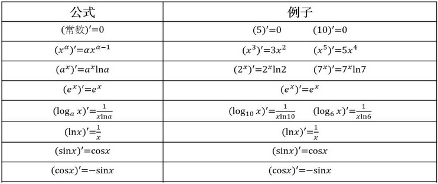
2.运算法则
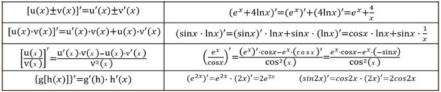
3.矩阵求导
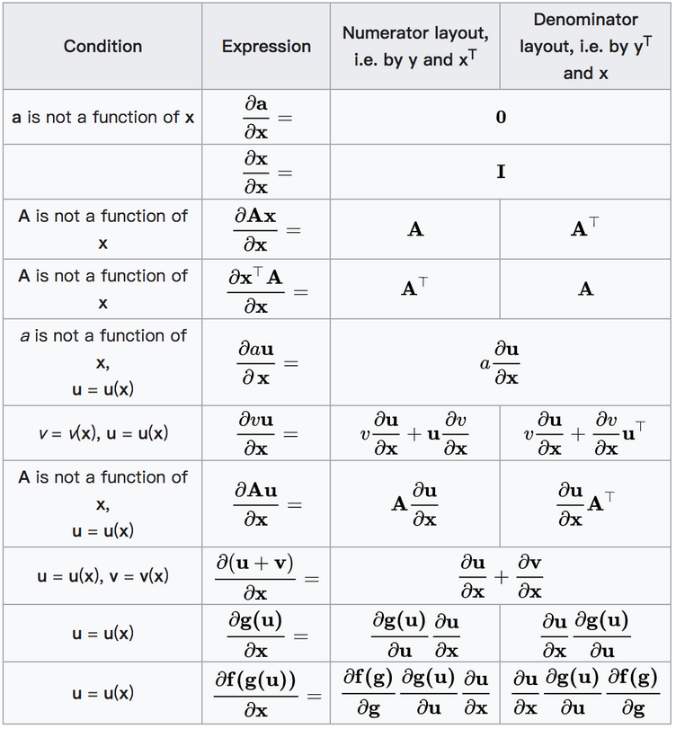
五、线性回归的损失和优化
1.例子引入
房屋价格与真实的数据之间存在这样的关系：
真实关系：真实房子价格 = 0.02×中心区域的距离 + 0.04×城市一氧化氮浓度 + (-0.12×自住房平均房价) + 0.254×城镇犯罪率再随机指定一个关系：
随机指定关系：预测房子价格 = 0.25×中心区域的距离 + 0.14×城市一氧化氮浓度 + 0.42×自住房平均房价 + 0.34×城镇犯罪率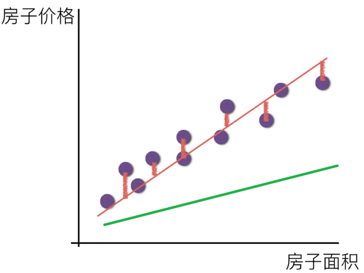
2.损失函数
定义：
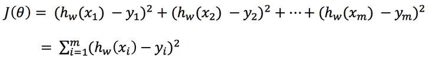
- yi为第i个训练样本的真实值
- h(xi)为第i个训练样本特征值组合预测函数
- 又称最小二乘法
3.正规方程
公式：
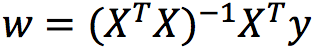
【注】
理解：X为特征值矩阵，y为目标值矩阵。直接求导，最后得出结果。
缺点：当特征过多过复杂时，求解速度太慢。
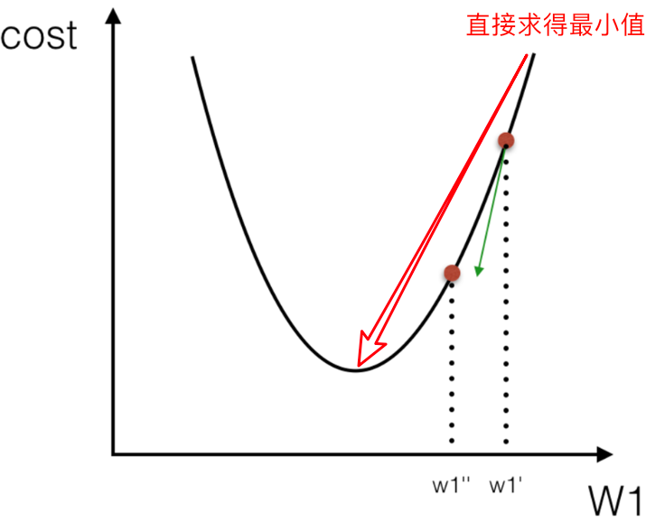
eg.
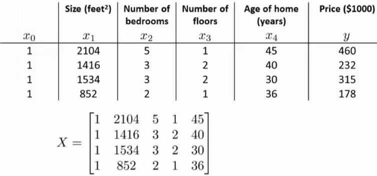
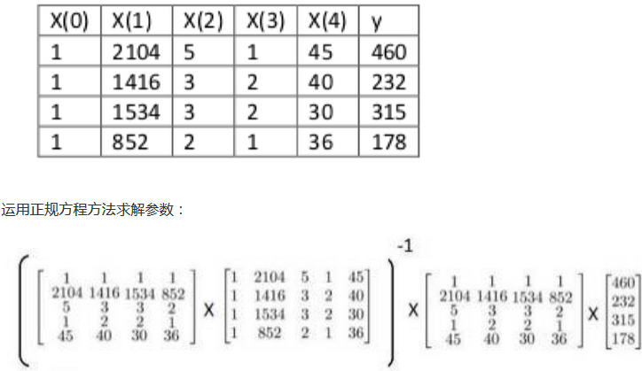
推导（一）：
将矩阵函数转化为矩阵写法：
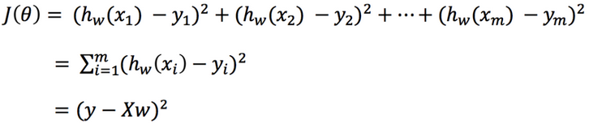
其中y是真实值矩阵，X是特征值矩阵，w是权重矩阵
对其求解关于w的最小值，已知y，X均已知二次函数直接求导，导数为0的位置，即为最小值。
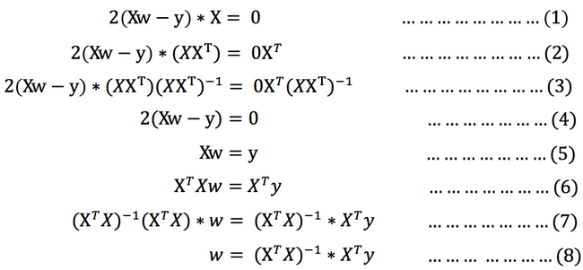
【注】
式(1)到式(2)推导过程中, X是一个m行n列的矩阵，并不能保证其有逆矩阵，但是右乘XT把其变成一个方阵，保证其有逆矩阵。
式（5）到式（6）推导过程中，和上类似。
4.梯度下降
引例：
梯度下降法的基本思想可以类比为一个下山的过程。
假设这样一个场景：一个人被困在山上，需要从山上下来(i.e. 找到山的最低点，也就是山谷)。但此时山上的浓雾很大，导致可视度很低。因此，下山的路径就无法确定，他必须利用自己周围的信息去找到下山的路径。这个时候，他就可以利用梯度下降算法来帮助自己下山。具体来说就是，以他当前的所处的位置为基准，寻找这个位置最陡峭的地方，然后朝着山的高度下降的地方走，（同理，如果我们的目标是上山，也就是爬到山顶，那么此时应该是朝着最陡峭的方向往上走）。然后每走一段距离，都反复采用同一个方法，最后就能成功的抵达山谷。
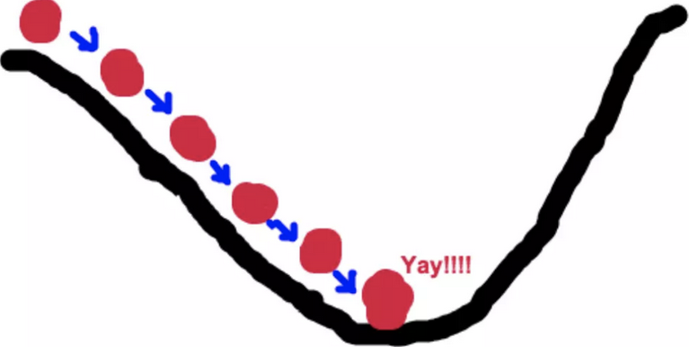
梯度下降的基本过程就和下山的场景很类似。
首先，我们有一个可微分的函数。这个函数就代表着一座山。
我们的目标就是找到这个函数的最小值，也就是山底。
根据之前的场景假设，最快的下山的方式就是找到当前位置最陡峭的方向，然后沿着此方向向下走，对应到函数中，就是找到给定点的梯度 ，然后朝着梯度相反的方向，就能让函数值下降的最快！因为梯度的方向就是函数之变化最快的方向。 所以，我们重复利用这个方法，反复求取梯度，最后就能到达局部的最小值，这就类似于我们下山的过程。而求取梯度就确定了最陡峭的方向，也就是场景中测量方向的手段。
定义：
梯度是微积分中一个很重要的概念
在单变量的函数中，梯度其实就是函数的微分，代表着函数在某个给定点的切线的斜率
在多变量函数中，梯度是一个向量，向量有方向，梯度的方向就指出了函数在给定点的上升最快的方向
这也就说明了为什么我们需要千方百计的求取梯度！我们需要到达山底，就需要在每一步观测到此时最陡峭的地方，梯度就恰巧告诉了我们这个方向。梯度的方向是函数在给定点上升最快的方向，那么梯度的反方向就是函数在给定点下降最快的方向，这正是我们所需要的。所以我们只要沿着梯度的反方向一直走，就能走到局部的最低点！
eg.单变量函数的梯度下降
我们假设有一个单变量的函数 :J(θ) = θ2
函数的微分:J、(θ) = 2θ
初始化，起点为： θ0 = 1
学习率：α = 0.4
我们开始进行梯度下降的迭代计算过程:
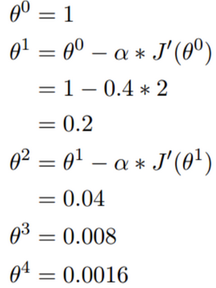
经过四次的运算，也就是走了四步，基本就抵达了函数的最低点，也就是山底
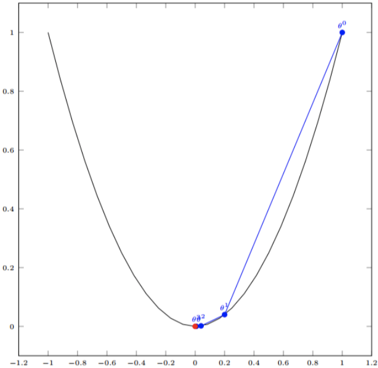
eg.多变量函数的梯度下降
我们假设有一个目标函数 ：:J(θ) = θ12 + θ22
现在要通过梯度下降法计算这个函数的最小值。我们通过观察就能发现最小值其实就是 (0，0)点。但是接下 来，我们会从梯度下降算法开始一步步计算到这个最小值! 我们假设初始的起点为: θ0 = (1, 3)
初始的学习率为:α = 0.1
函数的梯度为:▽:J(θ) =< 2θ1 ,2θ2>
进行多次迭代:
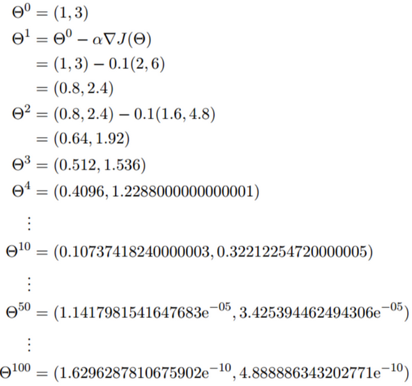
已经基本靠近函数的最小值点

公式：
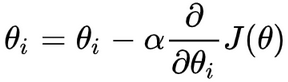
α是含义
α在梯度下降算法中被称作为学习率或者步长，意味着我们可以通过α来控制每一步走的距离，以保证不要步子跨的太大扯着蛋，哈哈，其实就是不要走太快，错过了最低点。同时也要保证不要走的太慢，导致太阳下山了，还没有走到山下。所以α的选择在梯度下降法中往往是很重要的！α不能太大也不能太小，太小的话，可能导致迟迟走不到最低点，太大的话，会导致错过最低点！
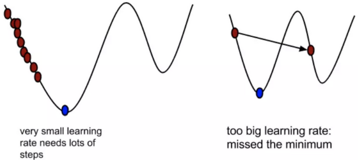
为什么梯度要乘以一个负号
梯度前加一个负号，就意味着朝着梯度相反的方向前进！我们在前文提到，梯度的方向实际就是函数在此点上升最快的方向！而我们需要朝着下降最快的方向走，自然就是负的梯度的方向，所以此处需要加上负号
我们通过两个图更好理解梯度下降的过程
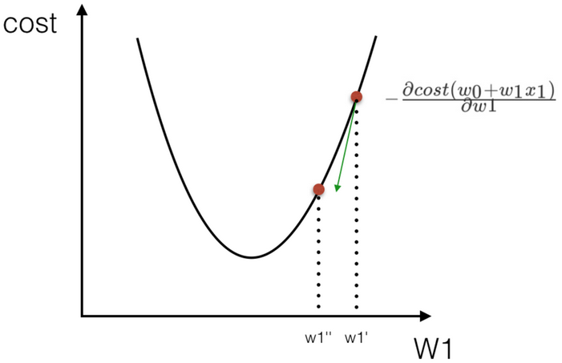

所以有了梯度下降这样一个优化算法，回归就有了"自动学习"的能力
- 梯度下降和正规方程的对比
| 梯度下降 | 正规方程 |
|---|---|
| 需要选择学习率 | 不需要 |
| 需要迭代求解 | 一次运算得出 |
| 特征数量较大可以使用 | 需要计算方程，时间复杂度高O(n3) |
- 选择：
- 小规模数据：
- LinearRegression(不能解决拟合问题)
- 岭回归
- 大规模数据：SGDRegressor
- 小规模数据：
六、 梯度下降方法
常见的梯度下降算法有：
- 全梯度下降算法(Full gradient descent）
- 随机梯度下降算法（Stochastic gradient descent）
- 随机平均梯度下降算法（Stochastic average gradient descent）
- 小批量梯度下降算法（Mini-batch gradient descent）
1.全梯度下降算法（FG）
计算训练集所有样本误差，对其求和再取平均值作为目标函数。
权重向量沿其梯度相反的方向移动，从而使当前目标函数减少得最多。
因为在执行每次更新时，我们需要在整个数据集上计算所有的梯度，所以批梯度下降法的速度会很慢，同时，批梯度下降法无法处理超出内存容量限制的数据集。
批梯度下降法同样也不能在线更新模型，即在运行的过程中，不能增加新的样本。
其是在整个训练数据集上计算损失函数关于参数θ的梯度：
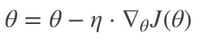
2.随机梯度下降算法（SG）
由于FG每迭代更新一次权重都需要计算所有样本误差，而实际问题中经常有上亿的训练样本，故效率偏低，且容易陷入局部最优解，因此提出了随机梯度下降算法。
其每轮计算的目标函数不再是全体样本误差，而仅是单个样本误差，即每次只代入计算一个样本目标函数的梯度来更新权重，再取下一个样本重复此过程，直到损失函数值停止下降或损失函数值小于某个可以容忍的阈值。
此过程简单，高效，通常可以较好地避免更新迭代收敛到局部最优解。其迭代形式为：
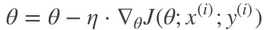
每次只使用一个样本迭代，若遇上噪声则容易陷入局部最优解。
【注】
x(i)表示一条训练样本的特征值，y(i)表示一条训练样本的标签值
3.小批量梯度下降算法（mini-bantch）
小批量梯度下降算法是FG和SG的折中方案,在一定程度上兼顾了以上两种方法的优点。
每次从训练样本集上随机抽取一个小样本集，在抽出来的小样本集上采用FG迭代更新权重。
被抽出的小样本集所含样本点的个数称为batch_size，通常设置为2的幂次方，更有利于GPU加速处理。
特别的，若batch_size=1，则变成了SG；若batch_size=n，则变成了FG.其迭代形式为：

4.随机平均梯度下降算法（SAG）
在SG方法中，虽然避开了运算成本大的问题，但对于大数据训练而言，SG效果常不尽如人意，因为每一轮梯度更新都完全与上一轮的数据和梯度无关。
随机平均梯度算法克服了这个问题，在内存中为每一个样本都维护一个旧的梯度，随机选择第i个样本来更新此样本的梯度，其他样本的梯度保持不变，然后求得所有梯度的平均值，进而更新了参数。
如此，每一轮更新仅需计算一个样本的梯度，计算成本等同于SG，但收敛速度快得多。
5.对比
数据集共有15081条记录，包括“性别”“年龄”“受教育情况”“每周工作时常”等14个特征，数据标记列显示“年薪是否大于50000美元”。我们将数据集的80%作为训练集，剩下的20%作为测试集，使用逻辑回归建立预测模型，根据数据点的14个特征预测其数据标记（收入情况）。
以下6幅图反映了模型优化过程中四种梯度算法的性能差异：
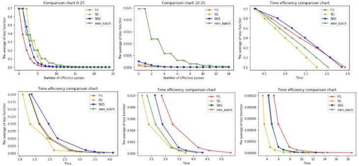
在图1和图2中，横坐标代表有效迭代次数，纵坐标代表平均损失函数值。图1反映了前25次有效迭代过程中平均损失函数值的变化情况，为了便于观察，图2放大了第10次到25次的迭代情况。
从图1中可以看到，四种梯度算法下，平均损失函数值随迭代次数的增加而减少。FG的迭代效率始终领先，能在较少的迭代次数下取得较低的平均损失函数值。FG与SAG的图像较平滑，这是因为这两种算法在进行梯度更新时都结合了之前的梯度；SG与mini-batch的图像曲折明显，这是因为这两种算法在每轮更新梯度时都随机抽取一个或若干样本进行计算，并没有考虑到之前的梯度。
从图2中可以看到虽然四条折现的纵坐标虽然都趋近于0，但SG和FG较早，mini-batch最晚。这说明如果想使用mini-batch获得最优参数，必须对其进行较其他三种梯度算法更多频次的迭代。
在图3，4，5，6中，横坐标表示时间，纵坐标表示平均损失函数值。
从图3中可以看出使用四种算法将平均损失函数值从0.7降到0.1最多只需要2.5s，由于本文程序在初始化梯度时将梯度设为了零，故前期的优化效果格外明显。其中SG在前期的表现最好，仅1.75s便将损失函值降到了0.1，虽然SG无法像FG那样达到线性收敛，但在处理大规模机器学习问题时，为了节约时间成本和存储成本，可在训练的一开始先使用SG，后期考虑到收敛性和精度可改用其他算法。
从图4，5，6可以看出，随着平均损失函数值的不断减小，SG的性能逐渐反超FG，FG的优化效率最慢，即达到相同平均损失函数值时FG所需要的时间最久。
结论：
（1）FG方法由于它每轮更新都要使用全体数据集，故花费的时间成本最多，内存存储最大。
（2）SAG在训练初期表现不佳，优化速度较慢。这是因为我们常将初始梯度设为0，而SAG每轮梯度更新都结合了上一轮梯度值。
（3）综合考虑迭代次数和运行时间，SG表现性能都很好，能在训练初期快速摆脱初始梯度值，快速将平均损失函数降到很低。但要注意，在使用SG方法时要慎重选择步长，否则容易错过最优解。
（4）mini-batch结合了SG的“胆大”和FG的“心细”，从6幅图像来看，它的表现也正好居于SG和FG二者之间。在目前的机器学习领域，mini-batch是使用最多的梯度下降算法，正是因为它避开了FG运算效率低成本大和SG收敛效果不稳定的缺点。
6.补充：
以下这些算法主要用于深度学习优化
- 动量法
- 其实动量法(SGD with monentum)就是SAG的姐妹版
- SAG是对过去K次的梯度求平均值
- SGD with monentum 是对过去所有的梯度求加权平均
- Nesterov加速梯度下降法
- 类似于一个智能球，在重新遇到斜率上升时候，能够知道减速
- Adagrad
- 让学习率使用参数
- 对于出现次数较少的特征，我们对其采用更大的学习率，对于出现次数较多的特征，我们对其采用较小的学习率。
- Adadelta
- Adadelta是Adagrad的一种扩展算法，以处理Adagrad学习速率单调递减的问题。
- RMSProp
- 其结合了梯度平方的指数移动平均数来调节学习率的变化。
- 能够在不稳定（Non-Stationary）的目标函数情况下进行很好地收敛。
- Adam
- 结合AdaGrad和RMSProp两种优化算法的优点。
- 是一种自适应的学习率算法
七、API
- sklearn.linear_model.LinearRegression(fit_intercept=True)
- 通过正规方程优化
- fit_intercept：是否计算偏置
- LinearRegression.coef_：回归系数
- LinearRegression.intercept_：偏置
- sklearn.linear_model.SGDRegressor(loss="squared_loss", fit_intercept=True, learning_rate ='invscaling', eta0=0.01)
- SGDRegressor类实现了随机梯度下降学习，它支持不同的loss函数和正则化惩罚项来拟合线性回归模型。
- loss:损失类型
- loss=”squared_loss”: 普通最小二乘法
- fit_intercept：是否计算偏置
- learning_rate : string, optional
- 学习率填充
- 'constant': eta = eta0
- 'optimal': eta = 1.0 / (alpha * (t + t0)) [default]
- 'invscaling': eta = eta0 / pow(t, power_t)
- power_t=0.25:存在父类当中
- 对于一个常数值的学习率来说，可以使用learning_rate=’constant’ ，并使用eta0来指定学习率。
- SGDRegressor.coef_：回归系数
- SGDRegressor.intercept_：偏置
八、欠拟合&过拟合
1.定义
- 过拟合：一个假设在训练数据上能够获得比其他假设更好的拟合， 但是在测试数据集上却不能很好地拟合数据，此时认为这个假设出现了过拟合的现象。(模型过于复杂)
- 欠拟合：一个假设在训练数据上不能获得更好的拟合，并且在测试数据集上也不能很好地拟合数据，此时认为这个假设出现了欠拟合的现象。(模型过于简单)
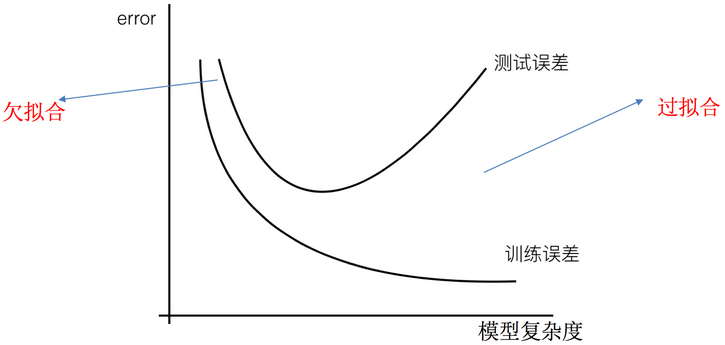
2.原因&解决办法
- 欠拟合原因以及解决办法
- 原因：学习到数据的特征过少
- 解决办法：
- 1）添加其他特征项，有时候我们模型出现欠拟合的时候是因为特征项不够导致的，可以添加其他特征项来很好地解决。例如，“组合”、“泛化”、“相关性”三类特征是特征添加的重要手段，无论在什么场景，都可以照葫芦画瓢，总会得到意想不到的效果。除上面的特征之外，“上下文特征”、“平台特征”等等，都可以作为特征添加的首选项。
- 2）添加多项式特征，这个在机器学习算法里面用的很普遍，例如将线性模型通过添加二次项或者三次项使模型泛化能力更强。
- 过拟合原因以及解决办法
- 原因：原始特征过多，存在一些嘈杂特征， 模型过于复杂是因为模型尝试去兼顾各个测试数据点
- 解决办法：
- 重新清洗数据，导致过拟合的一个原因也有可能是数据不纯导致的，如果出现了过拟合就需要我们重新清洗数据。
- 增大数据的训练量，还有一个原因就是我们用于训练的数据量太小导致的，训练数据占总数据的比例过小。
- 正则化
- 减少特征维度，防止维灾难
3.正则化
定义：
在解决回归过拟合中，我们选择正则化。但是对于其他机器学习算法如分类算法来说也会出现这样的问题，除了一些算法本身作用之外（决策树、神经网络），我们更多的也是去自己做特征选择，包括之前说的删除、合并一些特征。
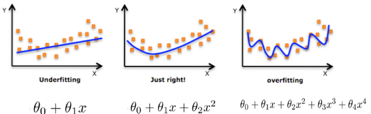
解决：
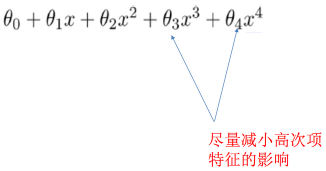
在学习的时候，数据提供的特征有些影响模型复杂度或者这个特征的数据点异常较多，所以算法在学习的时候尽量减少这个特征的影响（甚至删除某个特征的影响），这就是正则化。
【注】
调整时候，算法并不知道某个特征影响，而是去调整参数得出优化的结果。
正则化类别：
- L2正则化
- 作用：可以使得其中一些W的都很小，都接近于0，削弱某个特征的影响
- 优点：越小的参数说明模型越简单，越简单的模型则越不容易产生过拟合现象
- Ridge回归
- L1正则化
- 作用：可以使得其中一些W的值直接为0，删除这个特征的影响
- LASSO回归
九、维灾难
1.定义
随着维度的增加，分类器性能逐步上升，到达某点之后，其性能便逐渐下降。
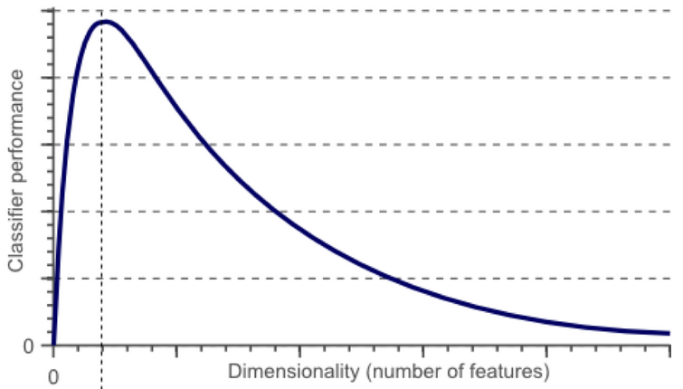
2.维数灾难&过拟合
我们假设猫和狗图片的数量是有限的(样本数量总是有限的)，假设有10张图片，接下来我们就用这仅有的10张图片来训练我们的分类器。
增加一个特征，比如绿色，这样特征维数扩展到了2维：
增加一个特征后，我们依然无法找到一条简单的直线将它们有效分类
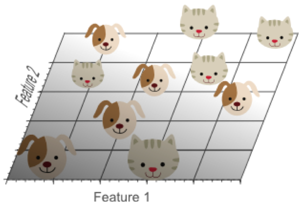
再增加一个特征，比如蓝色，扩展到3维特征空间：
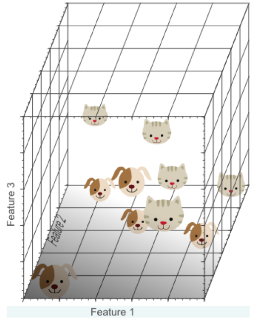
在3维特征空间中，我们很容易找到一个分类平面，能够在训练集上有效的将猫和狗进行分类：
在高维空间中，我们似乎能得到更优的分类器性能。
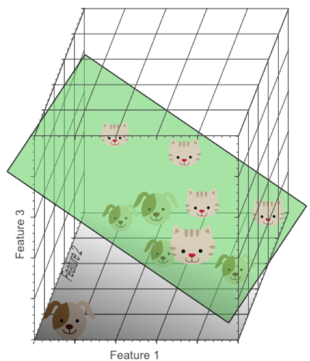
从1维到3维，给我们的感觉是：维数越高，分类性能越优。然而，维数过高将导致一定的问题：在一维特征空间下，我们假设一个维度的宽度为5个单位，这样样本密度为10/5=2;在2维特征空间下，10个样本所分布的空间大小25，这样样本密度为10/25=0.4;在3维特征空间下，10个样本分布的空间大小为125，样本密度就为10/125=0.08.
如果继续增加特征数量，随着维度的增加，样本将变得越来越稀疏，在这种情况下，也更容易找到一个超平面将目标分开。然而，如果我们将高维空间向低维空间投影，高维空间隐藏的问题将会显现出来：
过多的特征导致的过拟合现象：训练集上表现良好，但是对新数据缺乏泛化能力。
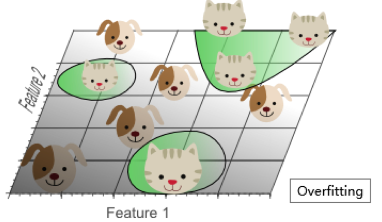
高维空间训练形成的线性分类器，相当于在低维空间的一个复杂的非线性分类器，这种分类器过多的强调了训练集的准确率甚至于对一些错误/异常的数据也进行了学习，而正确的数据却无法覆盖整个特征空间。为此，这样得到的分类器在对新数据进行预测时将会出现错误。这种现象称之为过拟合，同时也是维灾难的直接体现。
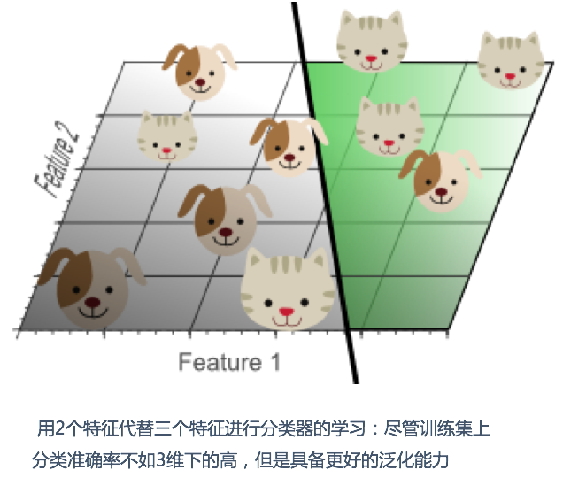
简单的线性分类器在训练数据上的表现不如非线性分类器，但由于线性分类器的学习过程中对噪声没有对非线性分类器敏感，因此对新数据具备更优的泛化能力。换句话说，通过使用更少的特征，避免了维数灾难的发生(也即避免了高维情况下的过拟合)
由于高维而带来的数据稀疏性问题：假设有一个特征，它的取值范围D在0到1之间均匀分布，并且对狗和猫来说其值都是唯一的，我们现在利用这个特征来设计分类器。如果我们的训练数据覆盖了取值范围的20%(e.g 0到0.2)，那么所使用的训练数据就占总样本量的20%。上升到二维情况下，覆盖二维特征空间20%的面积，则需要在每个维度上取得45%的取值范围。在三维情况下，要覆盖特征空间20%的体积，则需要在每个维度上取得58%的取值范围...在维度接近一定程度时，要取得同样的训练样本数量，则几乎要在每个维度上取得接近100%的取值范围，或者增加总样本数量，但样本数量也总是有限的。
如果一直增加特征维数，由于样本分布越来越稀疏，如果要避免过拟合的出现，就不得不持续增加样本数量。
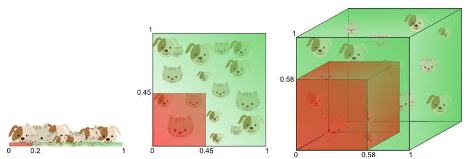
数据在高维空间的中心比在边缘区域具备更大的稀疏性，数据更倾向于分布在空间的边缘区域：
不属于单位圆的训练样本比搜索空间的中心更接近搜索空间的角点。这些样本很难分类，因为它们的特征值差别很大（例如，单位正方形的对角的样本）。
一个有趣的问题是，当我们增加特征空间的维度时，圆（超球面）的体积如何相对于正方形（超立方体）的体积发生变化。尺寸d的单位超立方体的体积总是1 ^ d = 1.尺寸d和半径0.5的内切超球体的体积可以计算为：
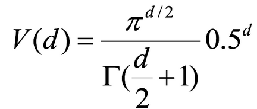
在高维空间中，大多数训练数据驻留在定义特征空间的超立方体的角落中。如前所述，特征空间角落中的实例比围绕超球体质心的实例难以分类。
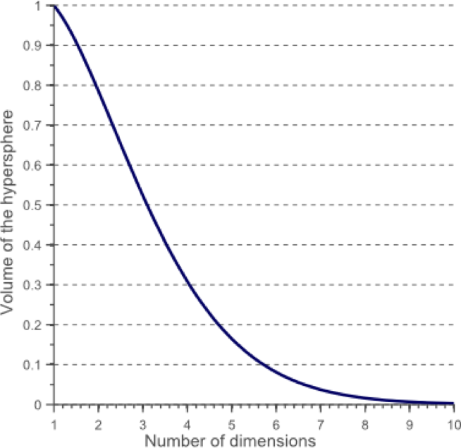
在高维空间中，大多数训练数据驻留在定义特征空间的超立方体的角落中。如前所述，特征空间角落中的实例比围绕超球体质心的实例难以分类：
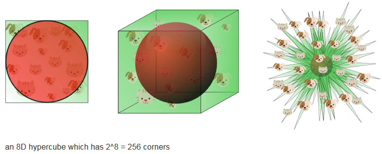
事实证明，许多事物在高维空间中表现得非常不同。 例如，如果你选择一个单位平方（1×1平方）的随机点，它将只有大约0.4％的机会位于小于0.001的边界（换句话说，随机点将沿任何维度“极端”这是非常不可能的）。 但是在一个10000维单位超立方体（1×1×1立方体，有1万个1）中，这个概率大于99.999999％。 高维超立方体中的大部分点都非常靠近边界。更难区分的是：如果你在一个单位正方形中随机抽取两个点，这两个点之间的距离平均约为0.52。如果在单位三维立方体中选取两个随机点，则平均距离将大致为0.66。但是在一个100万维的超立方体中随机抽取两点呢？那么平均距离将是大约408.25（大约1,000,000 / 6）！
非常违反直觉：当两个点位于相同的单位超立方体内时，两点如何分离？这个事实意味着高维数据集有可能非常稀疏：大多数训练实例可能彼此远离。当然，这也意味着一个新实例可能离任何训练实例都很远，这使得预测的可信度表现得比在低维度数据中要来的差。训练集的维度越多，过度拟合的风险就越大。
理论上讲，维度灾难的一个解决方案可能是增加训练集的大小以达到足够密度的训练实例。 不幸的是，在实践中，达到给定密度所需的训练实例的数量随着维度的数量呈指数增长。 如果只有100个特征（比MNIST问题少得多），那么为了使训练实例的平均值在0.1以内，需要比可观察宇宙中的原子更多的训练实例，假设它们在所有维度上均匀分布。
对于8维超立方体，大约98％的数据集中在其256个角上。结果，当特征空间的维度达到无穷大时，从采样点到质心的最小和最大欧几里得距离的差与最小距离本身只比趋于零：
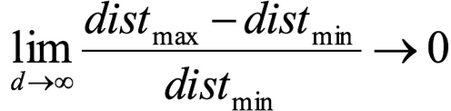
距离测量开始失去其在高维空间中测量的有效性,由于分类器取决于这些距离测量,因此在较低维空间中分类通常更容易，其中较少特征用于描述感兴趣对象。
如果理论无限数量的训练样本可用，则维度的诅咒不适用，我们可以简单地使用无数个特征来获得完美的分类。训练数据的大小越小，应使用的功能就越少。如果N个训练样本足以覆盖单位区间大小的1D特征空间，则需要N ^ 2个样本来覆盖具有相同密度的2D特征空间，并且在3D特征空间中需要N ^ 3个样本。换句话说，所需的训练实例数量随着使用的维度数量呈指数增长。
十、正则化线性模型
- Ridge Regression 岭回归
- Lasso 回归
- Elastic Net 弹性网络
- Early stopping
1.Ridge Regression（领回归，又名Tikhonov regularization）
岭回归是线性回归的正则化版本，即在原来的线性回归的 cost function 中添加正则项（regularization term）:
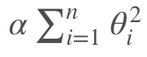
以达到在拟合数据的同时，使模型权重尽可能小的目的,岭回归代价函数:
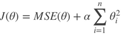
即
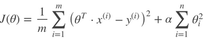
α=0：岭回归退化为线性回归
2.Lasso Regression（Lasso 回归）
Lasso 回归是线性回归的另一种正则化版本，正则项为权值向量的ℓ1范数。
Lasso回归的代价函数 ：
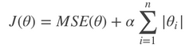
【注】
- Lasso Regression 的代价函数在 θi=0处是不可导的.
- 解决方法：在θi=0处用一个次梯度向量(subgradient vector)代替梯度，如下式
- Lasso Regression 的次梯度向量
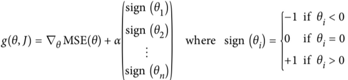
Lasso Regression 有一个很重要的性质是：倾向于完全消除不重要的权重。
例如：当α 取值相对较大时，高阶多项式退化为二次甚至是线性：高阶多项式特征的权重被置为0。
也就是说，Lasso Regression 能够自动进行特征选择，并输出一个稀疏模型（只有少数特征的权重是非零的）。
3.Elastic Net（弹性网络）
弹性网络在岭回归和Lasso回归中进行了折中，通过 混合比(mix ratio) r 进行控制：
- r=0：弹性网络变为岭回归
- r=1：弹性网络便为Lasso回归
弹性网络的代价函数 ：
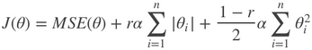
一般来说，我们应避免使用朴素线性回归，而应对模型进行一定的正则化处理，那如何选择正则化方法呢？
小结：
-
常用：岭回归
-
假设只有少部分特征是有用的：
- 弹性网络
- Lasso
- 一般来说，弹性网络的使用更为广泛。因为在特征维度高于训练样本数，或者特征是强相关的情况下，Lasso回归的表现不太稳定。
-
api:
from sklearn.linear_model import Ridge, ElasticNet, Lasso
4.Early Stopping
Early Stopping 也是正则化迭代学习的方法之一。
其做法为：在验证错误率达到最小值的时候停止训练。
十一、线性回归的改进——领回归
1.API
- sklearn.linear_model.Ridge(alpha=1.0, fit_intercept=True,solver="auto", normalize=False)
- 具有l2正则化的线性回归
- alpha:正则化力度，也叫 λ
- λ取值：0~1 1~10
- solver:会根据数据自动选择优化方法
- sag:如果数据集、特征都比较大，选择该随机梯度下降优化
- normalize:数据是否进行标准化
- normalize=False:可以在fit之前调用preprocessing.StandardScaler标准化数据
- Ridge.coef_:回归权重
- Ridge.intercept_:回归偏置
Ridge方法相当于SGDRegressor(penalty='l2', loss="squared_loss"),只不过SGDRegressor实现了一个普通的随机梯度下降学习，推荐使用Ridge(实现了SAG)
- sklearn.linear_model.RidgeCV(_BaseRidgeCV, RegressorMixin)
- 具有l2正则化的线性回归，可以进行交叉验证
- coef_:回归系数
class _BaseRidgeCV(LinearModel): def __init__(self, alphas=(0.1, 1.0, 10.0), fit_intercept=True, normalize=False,scoring=None, cv=None, gcv_mode=None, store_cv_values=False):
2.正则化程度的变化对结果的影响
- 正则化力度越大，权重系数会越小
- 正则化力度越小，权重系数会越大
十二、模型的保存&加载
1.API
from sklearn.externals import joblib
- 保存：joblib.dump(estimator, 'test.pkl')
- 加载：estimator = joblib.load('test.pkl')
2.线性回归的模型保存&加载例子
def load_dump_demo():
"""
线性回归:岭回归
:return:
"""
# 1.获取数据
data = load_boston()
# 2.数据集划分
x_train, x_test, y_train, y_test = train_test_split(data.data, data.target, random_state=22)
# 3.特征工程-标准化
transfer = StandardScaler()
x_train = transfer.fit_transform(x_train)
x_test = transfer.fit_transform(x_test)
# 4.机器学习-线性回归(岭回归)
# # 4.1 模型训练
# estimator = Ridge(alpha=1)
# estimator.fit(x_train, y_train)
#
# # 4.2 模型保存
# joblib.dump(estimator, "./data/test.pkl")
# 4.3 模型加载
estimator = joblib.load("./data/test.pkl")
# 5.模型评估
# 5.1 获取系数等值
y_predict = estimator.predict(x_test)
print("预测值为:\n", y_predict)
print("模型中的系数为:\n", estimator.coef_)
print("模型中的偏置为:\n", estimator.intercept_)
# 5.2 评价
# 均方误差
error = mean_squared_error(y_test, y_predict)
print("误差为:\n", error)